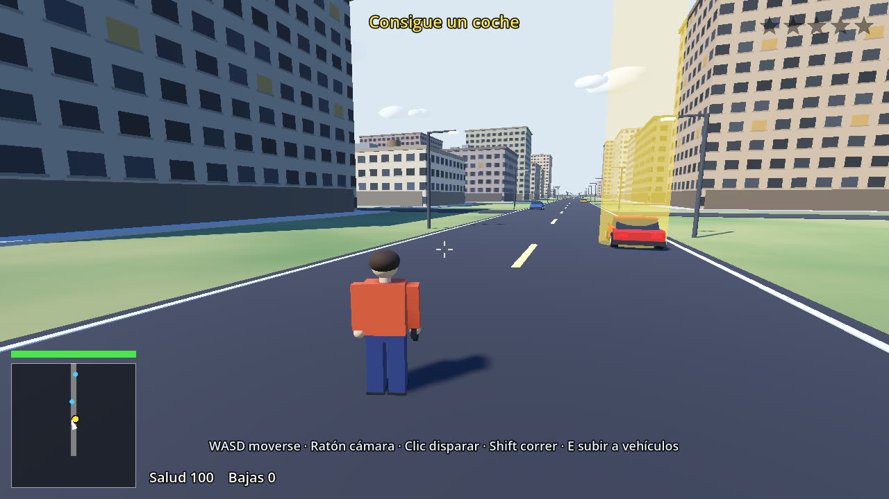
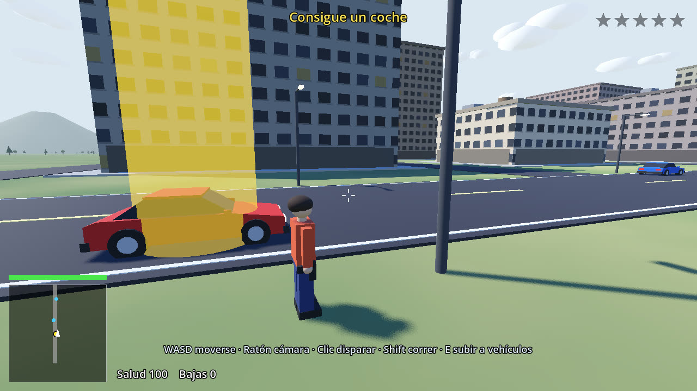
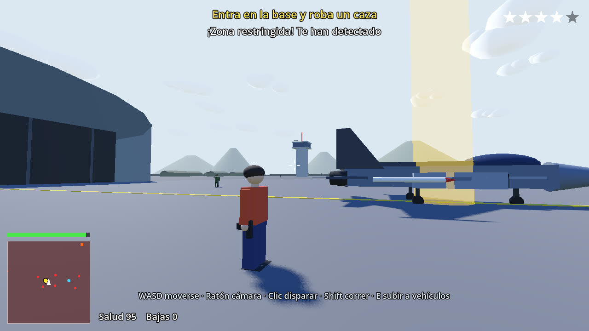
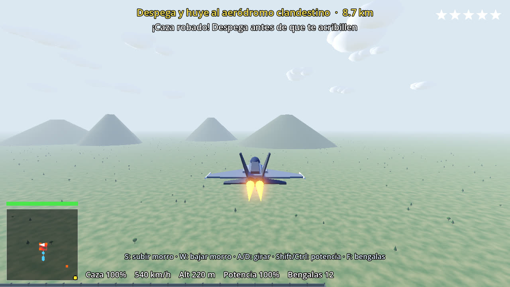

La misión
- Consigue un coche en la ciudad.
- Conduce hasta la base aérea y entra.
- Ábrete paso entre los soldados y sube a un caza.
- Despega y vuela 8,7 km hasta el aeródromo clandestino esquivando los misiles.
Una partida dura unos 5 minutos. Se guarda tu mejor tiempo.
Controles
| A pie | WASD mover · ratón cámara · clic disparar · Shift correr · Espacio saltar · E subir a un vehículo |
|---|---|
| Coche | W/S acelerar y marcha atrás · A/D girar · Espacio freno · E bajar |
| Caza en tierra | W acelerar (despega solo a 250 km/h) · S frenar · A/D girar |
| Caza en vuelo | S subir el morro · W bajarlo · A/D girar · Shift/Ctrl potencia · F bengalas |
| General | Esc pausa · R reiniciar |
Cómo instalarlo
Windows
- Descarga el .zip y extráelo: clic derecho → «Extraer todo…».
- Abre la carpeta y haz doble clic en
Operacion-Halcon.exe. - Si aparece «Windows protegió su equipo», pulsa «Más información» y «Ejecutar de todas formas». Sale porque el programa no tiene firma digital de pago.
Linux
- Descarga el .tar.gz y descomprímelo.
- Ejecuta
./operacion-halcon.x86_64desde una terminal en esa carpeta.
Requisitos: 64 bits y una tarjeta gráfica con Vulkan (recomendado) u OpenGL 3.3. No hace falta instalar nada.